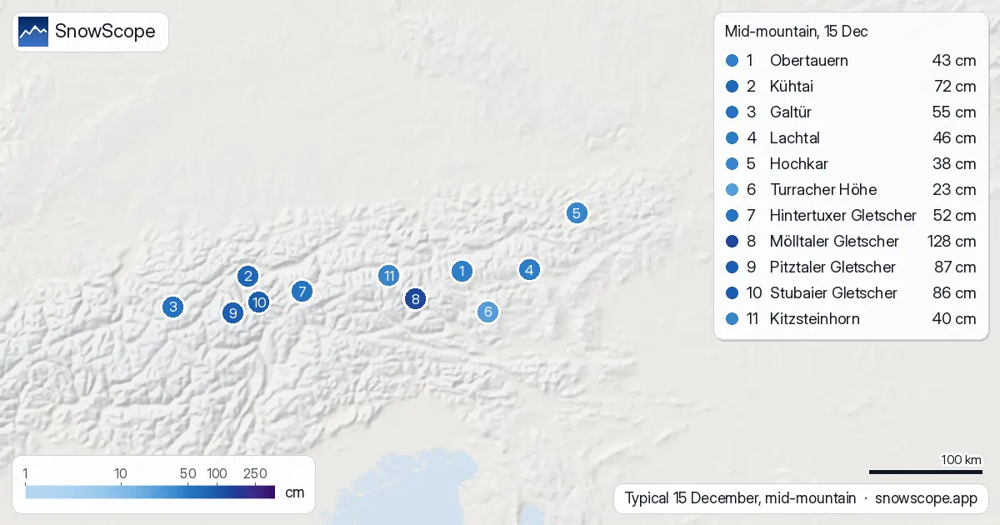
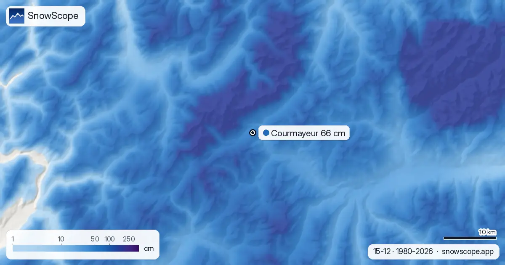
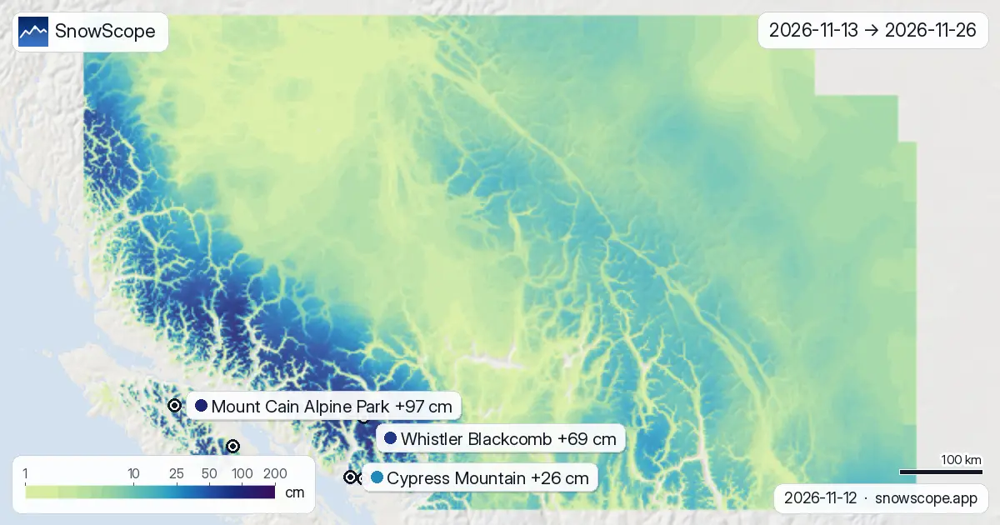
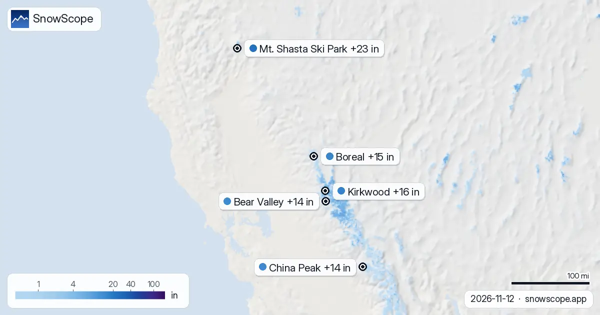

Partes de nieve
Partes de nieve diarios para esquiadores: dónde está la nieve, qué llega y dónde esquiar, a partir del mapa de nieve de SnowScope y de las estaciones de medida. Cada cifra sale de los datos del día.

Esquía los 131 km de pistas en la Forêt Blanche este diciembre con un pase de seis días por 298 EUR.

Ruka en diciembre: forfait de 6 días 265 EUR, día 58 EUR; 36 cm un 15 de diciembre típico, pero solo el 39 % de inviernos con 30 cm la primera semana.

En Monterosa Ski el forfait de día online va de 40,00 a 71,00 EUR. En diciembre la nieve está arriba: 124 cm habituales a 3030 m, 6 cm a 1207 m.

En Wolf Creek, el forfait de adulto cuesta 96 $ los días normales y 110 $ los días punta para la temporada 2026-2027; a media montaña había 34 in (87 cm) de nieve en un 15 de diciembre típico.

Fellhorn/Kanzelwand en diciembre: 63 cm en la cima (1965 m) un 15 de diciembre típico, 10 cm abajo; forfait de 6 días de Adviento a 344,50 EUR hasta el 20 de diciembre.

Planifica tu viaje de diciembre de 2026 a Les Orres comparando los precios de los pases semanales con nuestro historial de nieve de 46 inviernos pasados.

Hemavan en diciembre: 82 cm a media montaña un 15 de diciembre típico, todos los inviernos con 30 cm a mitad de mes; el diciembre más nevado de nuestra selección nórdica.

Los forfaits de día de Brighton parten de 72 $ para 2026/27 si se compran con antelación. A media montaña suele haber 37 in (94 cm) de nieve el 15 de diciembre, frente a 25 in (64 cm) en Park City.

Compara Grandvalira y estaciones españolas en diciembre de 2026 en cuanto a espesores de nieve, cotas de remontes y precios desde 49,00 EUR.

Glaciar del Pitztal en diciembre: 87 cm a media montaña un 15 de diciembre típico, más nieve que en los años 80; forfait de día 77 EUR, 6 días 410 EUR.

16 estaciones de esquí económicas de EE. UU. clasificadas según las probabilidades de nieve en diciembre de 46 inviernos pasados, con los precios diarios verificados: desde 49 $ entre semana hasta 125 $ o más.

Para una semana de esquí familiar a buen precio en diciembre en Astún-Candanchú, apunta a finales de mes, cuando las pistas altas tienen buena nieve en el 67 % de los inviernos pasados.

Alemania en diciembre: la Zugspitze y la cima del Fellhorn tenían 30 cm a mitad de mes en al menos 9 de cada 10 inviernos; Sudelfeld, Brauneck y Feldberg rara vez.

Puy-Saint-Vincent combina un forfait de adulto de 1 día por 44 EUR con una buena cantidad de nieve en diciembre en las zonas altas, comparado aquí con su gran vecino Serre Chevalier.

En los 46 inviernos pasados que tenemos registrados, la media montaña de Grand Targhee tuvo siempre al menos 20 in (50 cm) el 15 de diciembre. El forfait de un día online cuesta entre 125 $ y 180 $ según la fecha.

Oppdal en diciembre: 60 cm en la base (585 m) un 15 de diciembre típico, 93 % de inviernos con 30 cm a mitad de mes, mejor que la base de Trysil.

Grimentz-Zinal ofrece 71 km de pistas y nieve fiable en altura para tu viaje de diciembre, con pases de 6 días a CHF 339,00.

Austria antes de Navidad: Galtür 258 EUR y Kühtai 269 EUR por 6 días, con 30 cm en más del 90 % de los inviernos; los glaciares cuestan más, las estaciones pequeñas son una apuesta.

¿Planeas un viaje en diciembre a Baqueira Beret? Mira nuestro historial de nieve, precios de forfaits desde 70,00 € para un pase de 1 día, y cómo se compara con Astún-Candanchú.

Clasificamos las estaciones de esquí francesas según las probabilidades de nieve en diciembre y los precios de los forfaits, empezando desde 36,00 EUR por un pase diario de adulto en Les Karellis.


Galtür en diciembre: 55 cm a media montaña un 15 de diciembre típico, 93 % de inviernos con 30 cm a mitad de mes; día en temporada baja 55,50 EUR hasta el 18 de diciembre.

Geilo en diciembre: 57 cm a media montaña un 15 de diciembre típico, 96 % de inviernos con 30 cm a mitad de mes; forfait de día desde 590 NOK (unos 56 EUR).

A menudo se vende Grandvalira como una opción económica para esquiar en diciembre, pero la nieve natural en la base promedia solo 9 cm en nuestros inviernos pasados.

Hemsedal en diciembre: 70 cm a media montaña y 106 cm en la cima un 15 de diciembre típico, pero 32 cm en la base; Geilo, al lado, desde 590 NOK el día.

Glaciar de Hintertux en diciembre: 98 cm a 3245 m y 52 cm a media montaña un 15 de diciembre típico; forfait de día 82 EUR, 6 días 399 EUR.

Compara las probabilidades de nieve en diciembre y los precios verificados de forfaits desde 40,00 EUR en las estaciones italianas para tu escapada de fin de semana en coche.

Esquiar en Kühtai en diciembre: 60 cm en la base (1939 m) un 15 de diciembre típico y forfait de 6 días en temporada baja a 269 EUR hasta el 18 de diciembre.

Les 2 Alpes llega a los 3511 m para asegurar nieve en diciembre de 2026, con un forfait de adulto de 6 días por 266,50 EUR.

Les Karellis ofrece 45 km de pistas y un forfait de 6 días para adultos por 191,00 EUR, con un 98 % de probabilidad de nieve a media montaña a finales de diciembre.

Levi en diciembre: 38 cm un 15 de diciembre típico, 91 % de inviernos con 30 cm en Navidad y más nieve que antes; forfait de día 60 EUR, 57 EUR en línea.

Esquía en Livigno por 51,50 EUR al día antes del 18 de diciembre, cuando la nieve en la cima alcanza los 30 cm en el 100 % de los inviernos pasados.

En Michlifen, el 89 % de los inviernos casi no tienen nieve el 15 de diciembre (menos de 5 cm). Lo que dicen 46 inviernos sobre esquiar en el Atlas Medio en diciembre.

Montgenèvre tiene 56 cm de nieve habitual en diciembre en su base, dando a los esquiadores de fin de semana una cobertura más profunda que Sestriere al otro lado de la frontera.

Esquiar en Obertauern en diciembre: 43 cm un 15 de diciembre típico a media montaña y forfait de 6 días a 331 EUR antes de Navidad.

Oukaïmeden a mediados de diciembre: 16 cm en la media montaña en un invierno típico, 50 cm o más en solo el 11 % de los inviernos. Fecha por fecha, lo que dicen 46 inviernos.

Oukaïmeden está a 50 km en línea recta de Marrakech. Cómo lograr un fin de semana de esquí en diciembre: cuándo ir, qué probabilidades de nieve hay, qué se sabe de los precios.

Les 3 Vallées: 75,70 € al día del 5 al 18 de diciembre de 2026. Oukaïmeden: sin tarifa oficial online, 16 cm en la media montaña a mediados de diciembre. La comparación honesta.

Pila, sobre Aosta, combina un forfait de día a un precio fijo de 60,00 EUR con una nieve de diciembre fiable en sus cotas altas.

Los remontes de Saas-Fee llegan a 3556 m, donde nuestro historial de nieve muestra que el 100 % de los inviernos pasados tienen al menos 30 cm de nieve a mediados de diciembre.

12 estaciones nórdicas en diciembre: Hemavan, Hemsedal y Geilo tenían 30 cm a media montaña a mitad de mes en el 96-100 % de los inviernos; día en Finlandia 58-60 EUR.

Probabilidades de nieve en diciembre de 46 inviernos y precios diarios verificados: Ski Cooper 49 $, Les 3 Vallées 75,70 €, Oukaïmeden sin tarifa oficial. Dónde funciona un día de esquí barato en diciembre.

Descubre las tranquilas pistas de St-Luc Chandolin, donde la nieve a media montaña ha alcanzado los 30 cm en el 98 % de los inviernos durante finales de diciembre.

Trysil en diciembre: 44 cm a media montaña un 15 de diciembre típico, 83 % de inviernos con 30 cm a mitad de mes; los precios son dinámicos, reserva pronto.

Valloire-Valmeinier ofrece 131 km de pistas y un 98 % de probabilidad de tener 30 cm de nieve a media montaña a mediados de diciembre.

Zugspitze en diciembre: 122 cm a 2627 m un 15 de diciembre típico, forfait de día adulto en línea 70,50 EUR; debajo, Garmisch-Classic 69 EUR con mucha menos nieve.

Mölltaler Gletscher en diciembre: 66 cm en el remonte más bajo (2103 m) y 128 cm a media montaña un 15 de diciembre típico; 6 días en temporada baja a 332 EUR.

Mt. Baker en diciembre: 46 in (116 cm) de nieve a media montaña en un 15 de diciembre típico, y un forfait de 98,80 $ de lunes a jueves, que solo se vende el mismo día en taquilla.

¿Puede un esquiador principiante y prudente confiar en Courmayeur en diciembre, cuando la media a media altura es de 60 cm de nieve según nuestro historial de inviernos pasados?

Åre en diciembre: 40 cm a media montaña un 15 de diciembre típico, 89 % de inviernos con 30 cm a mitad de mes, pero una fuerte caída en la cima desde los 80.

Superficie nevada: 49.467 sq mi (128.120 km²) el 11 de noviembre, 49.050 sq mi (127.040 km²) hoy, 64.429 sq mi (166.870 km²) previstos el 16 de …

Entre hoy y el 16 de noviembre esperamos 5 in (12 cm) en Stowe, 4 in (11 cm) en Bolton Valley Resort y 4 in (10 cm) en Sugarbush Resort. Nuestras …

201.390 km²: es la superficie nevada que cuenta hoy nuestro modelo en el oeste de Canadá. La última vista despejada de cada lugar, hasta el 13 de …

Condiciones para esquiar en Deer Valley el 13 de noviembre de 2026: todavía sin nieve de verdad en el suelo, unas 4 in cerca de la cima con el temporal del fin de semana, lluvia en el lado bajo de East Village por debajo de unos 6,700 a 7,600 ft, y 11 in arriba en la semana.

¿Es un buen comienzo de invierno en el noreste de EE. UU.? La nieve de hoy en 4 estaciones en el noreste de EE. UU., frente a la misma fecha de cada …

Entre hoy y el 16 de noviembre esperamos 13 in (34 cm) en Bear Valley, 13 in (34 cm) en Dodge Ridge y 13 in (33 cm) en Badger Pass. Una palabra sobre …

Previsión de nevadas en Park City (Utah) el 13 de noviembre de 2026: casi sin nieve en el suelo ahora mismo, unas 5 in cerca de la cima con el temporal del fin de semana y una cota de nieve de 7,400 a 7,700 ft, lluvia en la base y unas 12 in arriba en la semana.

Stratton por altura, según nuestro modelo: arriba 4 in (10 cm) (3881 ft / 1183 m), en medio 2 in (6 cm) (2936 ft / 895 m), base 1 in (2 cm) (1991 ft …

¿Se llena la reserva de nieve como de costumbre? Comparamos la nieve de hoy en 5 estaciones en el oeste de Canadá con la misma fecha de cada uno de …

Previsión de nieve en Alpental el 13 de noviembre de 2026: cerca de 1 in en la parte alta, lluvia casi hasta la cima este fin de semana con la cota hacia 5,400 a 5,600 ft, y después 4 a 5 in de lluvia y nieve mezcladas arriba la semana que viene.

Repaso de la nieve en Bogus Basin para los esquiadores de Boise el 13 de noviembre de 2026: todavía sin nieve en el suelo, lluvia y nieve húmeda este fin de semana con la cota hacia 6,300 a 6,800 ft, y después aire más frío y unas 8 in en la cima para la semana que viene.

39 in (99 cm) en la parte alta: por eso Telluride encabeza nuestra lista. Espesor de hoy, nieve nueva de las últimas 72 horas, previsión: juntos dan …

El plano de pistas de Sillian (Hochpustertal) con nuestra capa de nieve el 13 de noviembre de 2026: 8,6 cm en la cima a 2399 m, laderas bajas sin nieve y una semana de lluvia y nieve mezcladas con la cota hacia 1.800 a 2.000 m.

Revelstoke, previsión de nieve: hasta 10–21 cm esperados hasta el 16 de noviembre (Oeste de Canadá). En Whistler Blackcomb, la cota de congelación …

Estado de la nieve en Silvretta Montafon el 13 de noviembre de 2026: 4,5 cm en la cima a 2421 m, media montaña y valle sin nieve, unos 40 cm en camino arriba esta semana y lluvia en el valle por debajo de 1.500 m.

Parte de nieve de Lech Zürs del 13 de noviembre de 2026: unos 6 cm en la cima (2436 m) y a media montaña, nada en Lech a 1430 m. Esta semana 42 cm arriba según nuestra previsión, hasta 91 cm según otras, lluvia y nieve mezcladas hacia los 1400 m. Y por qué Lech es el lado nevado del Arlberg.

Modelo más previsión en los Alpes hoy dan nieve polvo reciente. Qué ponerse, qué llevar y cuándo esquiar, estación por estación. Los consejos de …

Espesor de nieve en St. Anton am Arlberg el 13 de noviembre de 2026: cerca de 1 cm en la cima (2642 m), 5 cm a media montaña, nada en el pueblo. Esta semana 42 cm en la cima y 33 cm a media montaña, lluvia por debajo de unos 1480 m. Cuánta nieve necesitan las pendientes fuertes.

Dévoluy, tendencia de nieve: hasta 24–32 cm posibles hasta el 16 de noviembre (Alpes). Hasta el 16 de noviembre, nuestra previsión da 35 cm en …

Desde el 11 de noviembre, la cubierta de nieve pasó de 39.090 km² a 76.100 km²; el 16 de noviembre, la previsión da 57.910 km². Pfelders tiene hoy el …

Las estaciones de esquí del Atlas no guardan nieve en sus pistas hoy. La nieve solo se almacena en las cumbres más altas: unos 40 km² de suelo, hasta …

Parte de nieve de Obergurgl del 13 de noviembre de 2026: unos 20 cm en la cima (3024 m), 5 cm a media montaña, nada en los remontes de abajo (1784 m). Previsión de la semana: 34 cm arriba, 21 cm abajo, cota de nieve cerca de 1700 m. Y el comienzo de temporada habitual.

Espesor de nieve en Sölden el 13 de noviembre de 2026: unos 9 cm en la cima (3245 m), 5 cm a media montaña, nada en el valle a 1346 m. 25 cm previstos arriba esta semana, lluvia por debajo de unos 1620 m. Glaciar frente a pueblo, con 46 inviernos pasados.

Nevadas en Val Thorens, 13 de noviembre de 2026: 27 cm caídos en la cima (3175 m) y 17 cm a 2498 m en siete días; el espesor de nieve es de 50 cm y 8 cm. Próximos siete días: 86 cm en la cima, 73 cm a 2498 m, cota de nieve muy por debajo del pueblo. La temporada habitual según 46 inviernos.

El espesor de nieve en Chamonix el 13 de noviembre de 2026, altura por altura: nada en el fondo del valle, 1 cm a 2001 m, 12 cm arriba en Brévent-Flégère (2486 m), de 5 a 24 cm arriba en Les Grands Montets (2768 m). Cerca de un metro previsto en altura esta semana, lluvia en el valle. Cuánta nieve suele tener Chamonix, según 46 inviernos.

Nuestras elecciones son La Grave, Pfelders y Les Deux Alpes: miramos el espesor de nieve de hoy, la nieve nueva de las últimas 72 horas y la …

Espesor de nieve en Ischgl el 13 de noviembre de 2026: unos 5 cm en la cima (2868 m), 4 cm a media montaña, nada en el valle a 1352 m. Hasta 42 cm en la cresta esta semana, lluvia en el Paznaun por debajo de unos 1570 m. Y valle frente a cresta en 46 inviernos.

Parte de nieve de Les Menuires del 13 de noviembre de 2026: 28 cm en la cima (2838 m), nada en el suelo a 2112 m ni a 1386 m. Unos 80 cm esperados en la cima en siete días, cota de nieve hacia 1500 a 1700 m. Por qué Val Thorens, 450 m más arriba en el mismo valle, ya tiene más.

La isoterma de 0 °C decide si las montañas guardan nieve o sueltan lluvia: en los próximos días nuestra previsión la sitúa entre 2230 m y 2820 m en …

Estado de la nieve en Tignes el 13 de noviembre de 2026: 42 cm en la cima (3447 m), 12 cm a 2503 m, valle sin nieve a 1559 m y 99 cm previstos en la cima en siete días, con lluvia por debajo de unos 1700 m. La comparación con 46 inviernos pasados.

Nieve nueva en La Grave: 61 cm en las últimas 72 horas, incluidos 3 cm en las últimas 24. Nuestro modelo de nieve sitúa ahora unos 78 cm en las …

Nuestro modelo de nieve predice que Whistler Blackcomb recibirá 88 cm de nieve nueva para el lunes 16 de noviembre de 2026, liderando los centros turísticos globales.

Nuestra previsión pone la isoterma de 0 °C en el noreste de EE. UU. entre 0 ft (0 m) y 4593 ft (1400 m) en los días que vienen. El jueves 12 de …

¿Hay más nieve que hace un año? Comparamos hoy con el 12 de noviembre del invierno pasado en 4 estaciones en el noreste de EE. UU.: 0 tienen más …

Entre 1380 m y 3410 m: ahí sitúa nuestra previsión la isoterma de 0 °C en el oeste de Canadá en los próximos días. En las horas más templadas la cota …

Los mapas de hoy miran dos semanas adelante en los Pirineos, del 13 de noviembre al 26 de noviembre. Vienen de los dos modelos globales que llegan a …

¿Dónde nevará en el noreste de EE. UU. entre el 13 de noviembre y el 26 de noviembre, y cuánto? Preguntamos a los dos modelos globales que llegan a …

Catorce días de nieve nueva en un mapa, del 13 de noviembre al 26 de noviembre, para cada montaña en el oeste de Canadá: es lo que esperan los dos …

En Telluride la altura lo cambia todo: nuestro modelo da 0 in (0 cm) en la base (8734 ft / 2662 m), 2 in (6 cm) a media montaña (10.620 ft / 3237 m) …

Aquí están los nuevos mapas de las próximas dos semanas en los Alpes, del 13 de noviembre al 26 de noviembre: la nieve nueva esperada sobre el …

Aquí están los nuevos mapas de las próximas dos semanas en el Atlas (Marruecos), del 13 de noviembre al 26 de noviembre: la nieve nueva esperada …

Nuestros mapas a dos semanas muestran dónde debería caer nieve nueva en el oeste de EE. UU. entre el 13 de noviembre y el 26 de noviembre, según los …

Whistler Blackcomb, 116 cm de nieve: el espesor de hoy en la parte alta (12 de noviembre). 162 cm: es la nieve de hoy en la parte alta de Mount …

Kirkwood, tendencia de nieve: hasta 16 in posibles hasta el 15 de noviembre (Oeste de EE. UU.). Hasta el 15 de noviembre, nuestra previsión da 23 in …

Mount Cain Alpine Park, nieve nueva frente a la región: 15 cm en 72 horas (12 de noviembre). La superficie nevada pasó de 281.250 km² el 10 de …

Cimarron Mountain Club, 39 in de nieve: el espesor de hoy en la parte alta (12 de noviembre). 42 in (106 cm): es la nieve de hoy en la parte alta de …

El parte de esquí de Purgatory Resort (Durango, Colorado) según nuestro modelo de nieve: 3 in (7 cm) en la cima, base y media montaña sin nieve, de 4 a 7 in de nieve nueva previstos en los próximos siete días, y cómo es un invierno habitual en Purgatory.

Mount Cain Alpine Park: ¿cuánta nieve llega? 37 cm hasta el 15 de noviembre. ¿Cuánta nieve llega en el oeste de Canadá, y dónde? Hasta el 15 de …

Nuestro modelo divide Piau-Engaly en tres alturas: 2 cm en la cota alta (2527 m), 0 cm a media montaña (2144 m), 0 cm en la base (1762 m). En las …

Parte de nieve en el Atlas (Marruecos), 12 de noviembre. Estaciones del Atlas hoy: sin nieve en las pistas. Nieve solo en las cumbres más altas: unos …

Parte de nieve en los Pirineos, 12 de noviembre. De aquí al 15 de noviembre, la previsión trae 33 cm en Cauterets Cirque du Lys, 29 cm en Piau-Engaly …

Las condiciones de nieve en La Rosière en nuestra pasada del modelo del 11 de noviembre: 24 cm en la cima (2799 m), media montaña y pueblo sin nieve, y una previsión a siete días de 108 cm en la cima y 61 cm a media montaña. La vertiente soleada del Pequeño San Bernardo en cifras.

La nieve en Alpe Devero (Ossola, Piamonte) según nuestro modelo: 2 cm en la cima (2201 m), nada más abajo, 36 cm de nieve nueva previstos en la cima en los próximos siete días. La pequeña estación sin coches y su invierno habitual en cifras.

El parte de nieve de Les Arcs según nuestro modelo: 34 cm en la cima (3205 m), 2 cm a media montaña, base sin nieve, y hasta 69 cm de nieve nueva previstos en la cima en los próximos siete días. Lo que Les Arcs suele tener en noviembre y diciembre.

Las condiciones de nieve en Méribel según nuestro modelo del 11 de noviembre: 24 cm en la cima (2920 m), 1 cm a media montaña, valle sin nieve, y una previsión de 99 cm en la cima y 58 cm a media montaña en los próximos siete días. El invierno habitual de Méribel en cifras.

El mapa de pistas de Isola 2000 con la nieve de hoy: 9 cm en la cima, 7 cm a media montaña, 2 cm en la base tras 31 cm en una semana, cómo se reparten los sectores Pelevos, Saint-Sauveur y Lombarde, y lo que trae un invierno habitual.

Todavía sin nieve en Oukaïmeden: 0 cm en las tres alturas, nada en los últimos siete días, nada en la semana que viene. Lo que trae un noviembre habitual al Alto Atlas y cuándo apuntar al esquí.

A 1308 m en Dent de Vaulion, los 0 cm de hoy superan lo que dio esta fecha en 34 de los 46 inviernos pasados (lo habitual: 0 cm): ya hay una buena …

La zona blanca del mapa pasó de 45.820 km² (9 de noviembre) a 38.440 km² hoy, y la previsión dice 46.730 km² el 14 de noviembre. Glacier 3000: +26 cm …

Les Deux Alpes, previsión de nieve frente a la región: 51 cm hasta el 14 de noviembre. La superficie nevada pasó de 45.820 km² el 9 de noviembre a …

Parte de nieve en los Alpes, 11 de noviembre. Tres datos, una lista corta: el espesor de nieve de hoy, la nieve nueva de las últimas 72 horas y la …

Desde el 9 de noviembre, la nieve pasó de 40 km² a 20 km² hoy; para el 14 de noviembre, nuestra previsión da 10 km². Hoy las pistas del Atlas están …

¿Hay más nieve que hace un año? Comparamos hoy con el 11 de noviembre del invierno pasado en 4 estaciones en los Pirineos: 0 tienen más nieve ahora, …

Según nuestro modelo de nieve y la previsión, el día en los Pirineos trae nieve fina de principio de temporada y aire templado que puede dejar …

Parte de nieve en el noreste de EE. UU., 11 de noviembre. Hasta el 14 de noviembre la previsión da 15 in (38 cm) en Okemo Mountain, 12 in (30 cm) en …

En los próximos días la isoterma de 0 °C en el oeste de EE. UU. debería moverse entre 8333 ft (2540 m) y 13.780 ft (4200 m), según nuestra previsión. …

Parte de nieve en el oeste de EE. UU., 11 de noviembre. Hasta el 14 de noviembre la previsión da 17 in (43 cm) en Mt. Shasta Ski Park, 15 in (39 cm) …

¿Hay más nieve que hace un año? Comparamos hoy con el 11 de noviembre del invierno pasado en 4 estaciones en el oeste de EE. UU.: 4 tienen más nieve …